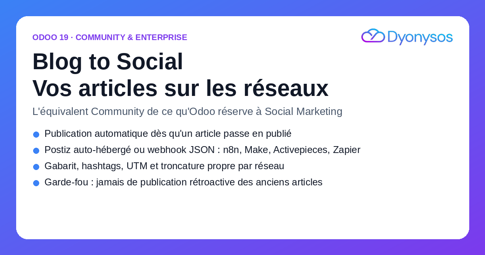
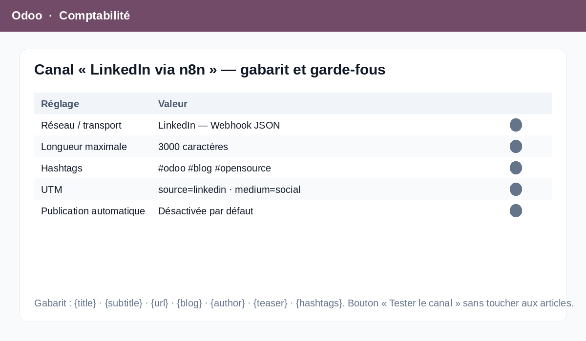
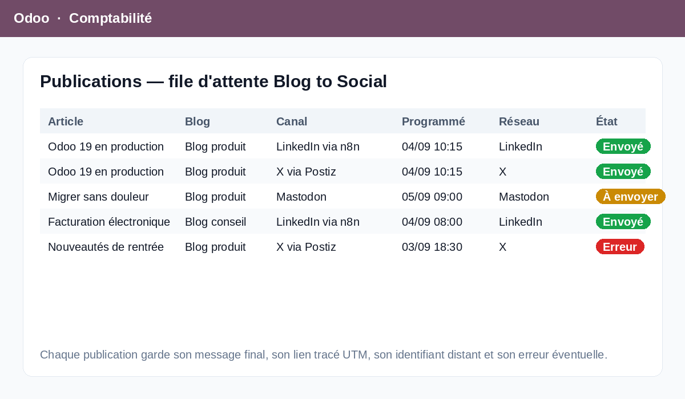

Odoo Social Marketing est une application Enterprise. Un site Odoo Community qui tient un blog n'a donc aucun moyen natif de pousser ses articles vers Facebook, Instagram, LinkedIn, X, TikTok, YouTube ou Mastodon. Concrètement : on publie l'article, puis on rouvre chaque réseau, on recopie le titre, on colle le lien, on retape l'accroche et les hashtags — et on oublie un réseau une fois sur trois.
Blog to Social branche le blog Odoo sur les réseaux, sans quitter Odoo, sans licence Enterprise et sans service SaaS intermédiaire obligatoire.
Un canal = un réseau, un transport, un gabarit. On choisit les blogs concernés (vide = tous), la longueur maximale (280 pour X, 3 000 pour LinkedIn, 2 200 pour Instagram — pré-remplies), les hashtags, l'image de couverture et les paramètres UTM ajoutés au lien. Un bouton « Tester le canal » envoie un message de test sans jamais toucher à vos articles.
Postiz : appel direct à votre instance auto-hébergée
(POST /api/public/v1/posts, en-tête Authorization) — le
chemin est un paramètre système, donc ajustable si votre version de Postiz diffère.
Webhook JSON : le transport universel. Un POST vers
n8n, Make, Activepieces ou Zapier avec la charge utile complète — titre,
texte, lien, image, réseau, blog, identifiant d'article.
Le gabarit accepte {title}, {subtitle}, {url},
{blog}, {author}, {teaser} et
{hashtags}. Le texte est tronqué à la longueur du réseau
sans couper un mot, avec des points de suspension, et
le lien reste toujours entier en fin de message — c'est lui qui
ramène le trafic.
C'est le point le plus important du module, et la raison pour laquelle il est installable sereinement sur un site existant. Une instance Odoo qui tient un blog depuis des années peut compter plusieurs milliers d'articles publiés. Un module naïf, à l'installation, les considérerait tous comme « à publier » et inonderait vos comptes — au mieux un spam, au pire une suspension de compte.
Blog to Social fige la date d'installation dans un paramètre système
(blog_social_publish.activation_date) et ignore définitivement tout
article publié avant cette date. Cette date est affichée en lecture seule dans les
réglages. Deuxième filet : la publication automatique est désactivée par
défaut — tant que la case n'est pas cochée, rien ne part tout seul et seul
le bouton manuel « Publier sur les réseaux » agit. Ces deux protections sont
couvertes par des tests automatisés livrés avec le module.

Chaque publication est un enregistrement : article × canal, message final (modifiable tant qu'il n'est pas parti), lien tracé, image, date de programmation, date d'envoi, identifiant distant et erreur éventuelle. Une tâche planifiée — « Blog to Social: process the publication queue », toutes les 15 minutes, inactive par défaut — traite la file, respecte les dates de programmation, rejoue les erreurs et s'arrête définitivement après 5 tentatives plutôt que de marteler une API en panne.

Groupe dédié Blog Social / Manager, ACL complètes et règles de cloisonnement multi-société sur les deux modèles. Les clés d'API et l'URL du webhook sont réservées à l'administrateur système au niveau du champ : une URL de webhook détournée exfiltrerait la clé d'authentification qui l'accompagne.
Tous les appels réseau ont un délai d'attente explicite. Une erreur HTTP, un DNS cassé ou un serveur injoignable ne remonte jamais en exception à l'utilisateur : la publication passe en « Erreur », le message est journalisé sur l'enregistrement, l'article reste intact.
Menu Blog to Social (Canaux, Publications), bouton « Publier sur les réseaux » dans l'en-tête de l'article, colonne d'état optionnelle dans la liste des articles, et un bloc de réglages dans Site Web › Configuration › Paramètres. Module traduit en français.
Blog to Social n'est pas un client social complet : il publie, il ne lit pas. Pas de boîte de réception, pas de commentaires, pas de statistiques d'engagement, pas de calendrier éditorial visuel. Il ne parle pas directement aux API de Meta, LinkedIn ou X — il passe par Postiz ou par votre outil d'automatisation, qui portent l'authentification OAuth de chaque réseau. Le module ne publie que des articles de blog Odoo : ni produits, ni événements, ni contenus libres.
Édition et intégration de modules Odoo 19. Support, installation et adaptations sur devis.
welcome@dyonysos.fr · https://dyonysos.fr
Odoo 19 — Community & Enterprise — licence OPL-1.